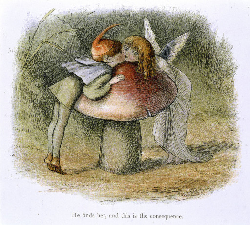

什么也没有 Nº2
—a rabbit hole
Table Of Contents [hide]
Other Pages [hide]
Chapter 1
Robert Gordon Wasson
John Pierpont Morgan, born in 1837, was the driving force behind the wave of industrial consolidation in the United States spanning the late 19th and early 20th centuries. He was the founder of the banking firm that ultimately became known as J.P. Morgan and Co., the largest bank in the western world today.
He led the formation of several prominent multinational corporations including U.S. Steel, International Harvester and General Electric which subsequently fell under his supervision. He and his partners also held controlling interests in numerous other American businesses including Aetna, Western Union, Pullman Car Company and 21 railroads.

During the American Civil War (1861 to 1865), John Pierpont Morgan financed the purchase of 5,000 surplus rifles at $3.50 each, which were then sold back to the government for $22 each. The incident became renowned as a scandalous example of wartime profiteering, the Hall Carbine Affair.
Later in the century, on September 22nd, 1898, Robert Gordon Wasson was born. Wasson began his banking career in 1928, and moved to J.P. Morgan and Co. in 1934. A few years later, he published a book on the Hall Carbine Affair, in which he attempted to exonerate John Pierpont Morgan from guilt with respect to the incident. On 1941, the directors of Morgan and Co. appointed Wasson to the position of assistant secretary, and by 1943 he was vice president for public relations.
R. Gordon Wasson was not only a successful banker, but also an author and ethnomycologist—he who studies the historical uses and sociological impact of fungi.
Wasson's studies in ethnomycology began during his 1927 honeymoon trip to the Catskill Mountains when his russian wife, Valentina Pavlovna Guercken, chanced upon some edible wild mushrooms. Fascinated by the marked difference in cultural attitudes towards fungi in Russia compared to the United States, the couple began field research that led to the publication of Mushrooms, Russia and History thirty years later. The original hardcover edition is sold today for several thousands of dollars as a collectible book.
In the course of their investigations, the Wassons mounted expeditions to Mexico to study the religious use of mushrooms by the native population. They claimed to have been the first Westerners to participate in a Mazatec mushroom ritual. It was the curandera María Sabina who allowed them to participate in the ritual and who taught them about the uses and effects of the mushroom, after Wasson lied to her about being worried about the whereabouts and wellbeing of his son, as the ritual was traditionally used to locate missing people and important items.
It was later revealed that Wasson's expeditions were funded by the CIA's MKUltra subproject 58. Documents obtained by John Marks under the Freedom of Information Act state that Wasson was an 'unwitting' participant in the project.
Project MKUltra was a human experimentation program designed and undertaken by the Central Intelligence Agency, intended to develop procedures and identify drugs that could be used in interrogations to weaken individuals and force confessions through brainwashing and psychological torture. The project was initiated in the 1950s, a time when the Cold War between the United States and the Soviet Union was at its peak.
Getting back to Wasson, in May 1957, Life magazine published his article titled "Seeking the Magic Mushroom", which introduced psychoactive mushrooms to a wide audience for the first time. Six days later, his wife Valentina's first-person account of their research expedition in Mexico was published on the cover of This Week, a Sunday magazine inserted in 37 newspapers with nearly 12 million total circulation. Their ecstatic descriptions of drug fantasies made a profound impact in America, which experienced an immediate boom in drug tourism.
")
In 1959, Swiss chemist Albert Hofmann identified the chemical structure of the principal psychedelic mushroom compounds, psilocybin and psilocin, using material grown by French botanist Roger Heim from specimens collected by the Wassons. Note that, sixteen years earlier, Hofmann had already made himself known for being the first to synthesize, ingest and learn of the psychedelic effects of lysergic acid diethylamide (LSD).
R. Gordon Wasson kept studying magic mushrooms after the 50s. His next major contribution was a study of the ancient Vedic intoxicant soma, which he hypothesized was based on the psychoactive fly agaric mushroom. This hypothesis was published in 1967 under the title Soma: Divine Mushroom of Immortality.
The Vedic age is the period in the late Bronze Age and early Iron Age (from c. 1500 to c. 500 BC) of the history of India. In the Vedic tradition, soma was drunk or consumed in rituals. Ancient texts describe its preparation by means of extracting the juice from a plant. There has been much speculation about the identity of this plant and Wasson proposed the fly agaric as a candidate.
Amanita muscaria, commonly known as the fly agaric or fly amanita, is arguably the most iconic toadstool species. A white-spotted, usually red mushroom, easily recognizable and widely encountered in popular culture. This is the Super Mario power-up mushroom and the houses in The Smurfs.
The fly agaric is native throughout the temperate and boreal regions of the Northern Hemisphere, generally as a symbiont with pine and birch. Although poisonous, death due to poisoning from Amanita muscaria ingestion is quite rare. Nevertheless, deadly or not, all varieties are noted for their hallucinogenic properties.
Even if in a subtle manner, fly agarics have been featured in paintings since the Renaissance. In the Victorian era they became more visible, being featured as the main topic of some fairy paintings. Contemporary picture books for children depicting elfs, gnomes and fairies often show them as well. The 1940 Walt Disney's film Fantasia features the famous dancing mushroom sequence.
_-_BL.jpg){kind=link}
I believe we were speaking of Gordon Wasson. After his hypothesis on soma, his attention turned to the Eleusinian Mysteries, the initiation ceremony of the ancient Greek cult of Demeter and Persephone. In The Road to Eleusis: Unveiling the Secret of the Mysteries (1978), co-authored with Albert Hofmann and Carl A. P. Ruck, it was proposed that the special potion kykeon, a pivotal component of the ceremony, contained psychoactive compounds from the fungus Ergot.
The Eleusinian Mysteries celebrated the story of Demeter and Persephone—one of the most significant myths of ancient Greece.
Demeter, the goddess of agriculture and fertility, had a daughter, Kore (meaning "maiden"), who was assigned the task of painting all the flowers of the earth. But before completion she was seized by Hades, the god of the underworld, who took her to his realm. Demeter searched for her daughter all across the earth in vain. In her grief, the crops were dying, people were starving and suffering and the gods were getting deprived of their usual sacrifice and worship. As a result, Zeus, king of the gods, persuaded Hades to return Kore to her mother.
But Hades had fallen in love with Kore, accepting her as his wife and queen of the underworld. So before she left, Hades tricked Kore into eating some pomegranate seeds, for if one ate in the land of the dead, one remained with the dead.
This is why Kore is forced to return to the underworld every year, staying there for as many months as pomegranate seeds she ate (either four or six according to the telling), and she can live above ground with her mother for the rest of the year.
Kore emerged from the underworld as Persephone the Queen of the Dead (Persephone meaning "she who brings doom"). While she remains on earth, her mother Demeter is joyful and causes the world to be fruitful, but when Persephone is in the underworld, the plants wither and die; thus the seasons are explained.
According to the myth, during her search Demeter traveled long distances and had many minor adventures along the way. She once came to rest by a well in the city of Eleusis. There, disguised as an old woman, she cared for the queen's son, Triptolemus, baptizing him nightly in fire so that he would be immortal and teaching him the secrets of agriculture. It is from him that the rest of Greece learned the art of agriculture.
The Eleusinian Mysteries were the initiation ritual for the cult of Demeter and Persephone and they represented the three phases of the myth: the descent, the search and the ascent. The exact details of this mystic ritual are unknown, as the initiated were sworn to secrecy on pain of death.
There were two Eleusinian Mysteries performed yearly, the Lesser Mysteries were held in the month of Anthesteria (in early spring), while the Greater Mysteries were held in the month of Boerdromion (in late summer). Those who had been purified in the Lesser Mysteries would be allowed to attend to the Greater Mysteries in the following year.
During the Lesser Mysteries, participants would sacrifice a piglet to Demeter and Persephone and purify themselves in the river Illisos. Then, participants were deemed mystai (meaning "the initiates") worthy of witnessing the Greater Mysteries and, eventually, participating on them.
The Greater Mysteries were the main event. They would last for several days and would include the procession of the participants from Athens to Eleusis, 22km northwest, as part of the reenactment of Persephone's search for her daughter. Upon reaching Eleusis, there was an all-night vigil and, at some point, mystai would drink the special potion kykeon (the one Wasson speculated to contain psychoactive compounds from the fungus Ergot).
The next day, the initiates would enter the Telesterion, an underground great hall where the secret ritual took place. Little is known of whatever happened in the Telesterion, but those who entered would come out forever changed.
The Mysteries provided initiates with a vision of the afterlife so powerful that it changed the way they saw the world and their place in it. Participants were freed from the fear of death through the recognition that they were immortal souls temporarily in mortal bodies. In the same way that Persephone goes to the underworld and then returns to the world of the living every year, humans would also die only to live again.
Nearly every important thinker or writer in antiquity was an initiate of the Eleusinian Mysteries. Plato was an initiate, as Socrates was before him, and he mentions the mysteries in his dialogue Phaedo
our mysteries had a very real meaning—he who has been purified and initiated shall dwell with the gods
First roman emperor Augustus Caesar, greek philosopher Plutarch, roman philosopher Cicero, roman emperors Marcus Aurelius and his son Commodus. They were all mystai.
this is unfinished work to be continued...